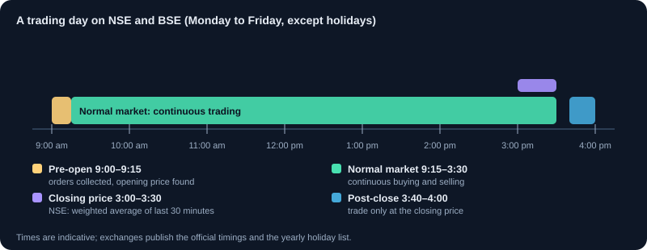
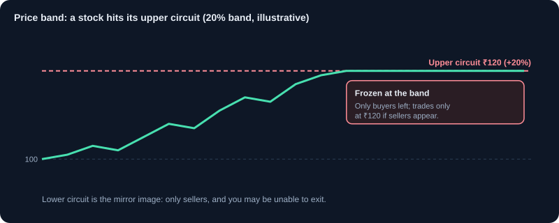
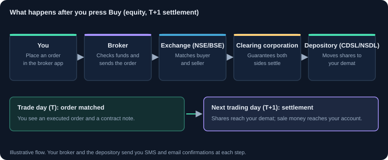
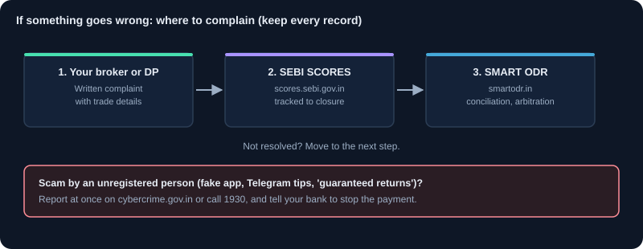

Market Rules & Investor Protection
Market timings, settlement, price bands and circuit breakers, applying for IPOs, spotting scams and tips, and how to complain if something goes wrong.
1. When the market is open
NSE and BSE trade equities from Monday to Friday, except on exchange holidays published at the start of each year.
- Pre-open session, 9:00 to 9:15 am: orders are collected for about eight minutes, then matched to find a fair opening price. This reduces wild swings at the open.
- Normal market, 9:15 am to 3:30 pm: continuous buying and selling.
- Closing price: on NSE it is the weighted average price of trades in the last 30 minutes, not the very last trade.
- Post-close session, about 3:40 to 4:00 pm: you can place orders only at the closing price.
- Muhurat trading: a short special session on Diwali evening, announced by the exchanges each year.
Orders placed outside market hours are usually stored by your broker as after-market orders (AMO) and sent when the market opens.
2. Settlement: when shares and money actually move
A trade is a promise. Settlement is when the promise is completed. Indian equities settle on T+1: one trading day after the trade date.
- Buy on Monday: the shares reach your demat account on Tuesday (T+1), if you have paid.
- Sell on Monday: the money is credited to your trading account after settlement on Tuesday, and you can withdraw it after that.
- Selling shares you bought yesterday before they reach your demat (BTST) is risky: if the seller fails to deliver, you can face an auction penalty.
- An optional same-day (T+0) settlement has been introduced for a limited list of stocks; most trades still settle T+1.
3. Price bands and circuit limits
Exchanges limit how far a single stock can move in one day so that panic or manipulation cannot move prices without control.
- Many stocks have a daily price band of 2%, 5%, 10% or 20%. When a stock hits the top of its band it is 'upper circuit': it trades only at that price and often has no sellers. 'Lower circuit' is the opposite, and you may not be able to sell.
- Stocks in the F&O segment have no fixed band but dynamic limits that the exchange widens step by step.
- Small, illiquid stocks that hit circuits day after day are a warning sign; you may not be able to exit when you want.
4. Market-wide circuit breakers
If the NIFTY 50 or SENSEX falls or rises sharply, trading stops across the whole market to let people pause and think.
- Index-wide halts trigger at moves of 10%, 15% and 20% from the previous close.
- How long the halt lasts depends on the time of day. A 20% move stops trading for the rest of the day.
- Trading resumes with a short pre-open call auction, like the morning session.
Such halts are rare (the last were in March 2020), but they show why a stop-loss order cannot always protect you in a crash.
5. Opening and protecting your account
- KYC (Know Your Customer) is done once with your PAN, Aadhaar, bank details and a photo. It is shared across brokers through KRAs.
- Add a nominee to your demat account, trading account and mutual funds, or formally opt out. It makes transfer to your family much easier.
- Turn on two-factor login and never share your password, OTP or PIN with anyone, including people who say they are from your broker.
- Read the contract note your broker sends after each trading day. It lists every trade, price and charge.
- Check the monthly Consolidated Account Statement (CAS) from CDSL/NSDL; it shows every share and fund you hold.
- Brokers must return unused money in your trading account to your bank periodically (monthly or quarterly, as you choose).
- If you suspect misuse, you can ask your broker to freeze (block) your trading account at once.
6. Applying for an IPO
An IPO (initial public offering) is when a company first sells shares to the public.
- Apply through ASBA (net banking) or the UPI mandate from your broker's app. The money is only blocked in your bank account and is debited if you get shares.
- Retail investors can apply for up to ₹2 lakh. When the issue is oversubscribed, allotment is by lottery, usually one lot per successful applicant.
- Shares now list three working days after the issue closes (T+3).
- Read the offer document (RHP): what the money will be used for, how much is an offer for sale by existing owners, the risk factors and the valuation compared with listed peers.
- The 'grey market premium' (GMP) quoted on social media is unofficial and unregulated. It is not a reliable signal.
7. Registered advice versus tips
Only SEBI-registered Investment Advisers (RIA) and Research Analysts (RA) may give you paid personalised advice or stock recommendations.
- Check the registration number on the SEBI website (Intermediaries / Recognised Intermediaries). A real adviser shows it on every communication.
- Registered advisers cannot guarantee returns or take your trading login.
- Paid 'tip' groups on Telegram or WhatsApp, and influencers selling 'sure-shot' calls without registration, are not regulated. SEBI has barred regulated entities from working with such unregistered influencers.
- Educational content, like this site, explains concepts; it is not advice about what you should buy or sell.
8. Common scams and red flags
- Guaranteed or fixed returns from shares, F&O or 'algo' trading. Markets cannot guarantee returns; anyone who promises them is lying.
- Pump and dump: operators buy a small, illiquid stock, hype it on social media or SMS, then sell to the people who rush in.
- Fake trading apps and WhatsApp 'investment classes' that pretend to be big brokers or foreign institutions, offer 'institutional accounts' or 'VIP IPO allotment', and ask you to pay into personal or unrelated bank accounts.
- Dabba (box) trading: illegal betting on prices outside the exchange. You have no protection if the operator vanishes.
- Account-handling offers: someone 'manages' your account with your login. It is against the rules and often ends in losses.
- Pressure to act immediately, requests for OTP or remote access to your phone, and payment to any account not in your broker's name.
Pay only into your broker's own bank account (shown in their app), and verify any 'broker' on the SEBI or exchange website before you deal with them.
9. If something goes wrong: how to complain
Complain in writing and keep records: contract notes, screenshots, emails and transaction IDs.
- First, raise it with your broker or depository participant. They must reply within a set time.
- If you are not satisfied, file on SEBI's SCORES portal (scores.sebi.gov.in). Complaints go to the right entity and are tracked.
- If it is still not resolved, take it to SMART ODR (smartodr.in), SEBI's online platform for conciliation and arbitration with brokers and other market entities.
- If a broker defaults and is declared a defaulter, eligible claims can be paid from the exchange's Investor Protection Fund.
- For frauds by unregistered people, also report to the cybercrime portal (cybercrime.gov.in) or helpline 1930.
10. Key takeaways
- Market hours are 9:15 am to 3:30 pm, with a pre-open session from 9:00 am; trades settle on T+1.
- Circuit limits can stop you from buying or selling; avoid stocks that hit them repeatedly.
- Keep KYC and nomination up to date, use two-factor login and read your contract notes and CAS.
- Only SEBI-registered advisers can give paid advice. Guaranteed returns are always a red flag.
- Complain to your broker first, then SCORES, then SMART ODR. Keep every record.
Charts and visuals




Key terms, explained
- SEBI
- The Securities and Exchange Board of India, the regulator that protects investors and oversees markets.
- KYC
- Know Your Customer: identity and address verification required before you can invest.
- Settlement (T+1)
- The process of transferring shares and money after a trade. In India, equity trades settle one trading day after the trade (T+1).
- Pre-open session
- The 9:00–9:15 am session in which orders are collected and matched to set a fair opening price before normal trading starts.
- Circuit limit
- A maximum daily upper or lower price move allowed for a stock. Trading may pause when it is hit.
- Market-wide circuit breaker
- A halt in trading across the whole market when the NIFTY 50 or SENSEX moves 10%, 15% or 20% in a day.
- Contract note
- The legal record your broker sends after each trading day, listing every trade, price, brokerage, tax and charge.
- Nomination
- Naming the person who should receive your shares, funds or account balance after your death. You can name more than one person and split the share.
- IPO
- Initial Public Offering: a company's first sale of shares to the public, after which it is listed.
- ASBA
- Application Supported by Blocked Amount: the IPO payment method in which the money stays in your bank account, blocked, and is debited only if you receive shares.
- SEBI-registered adviser (RIA / RA)
- An Investment Adviser or Research Analyst registered with SEBI. Only they may charge for personalised advice or stock recommendations.
- Pump and dump
- A fraud in which operators buy a small stock, hype it to push the price up, and sell to the buyers they attract.
- SCORES
- SEBI's online complaints system (scores.sebi.gov.in) for complaints against listed companies, brokers and other market entities.
- SMART ODR
- SEBI's online dispute resolution platform (smartodr.in) for conciliation and arbitration with market entities when a complaint is not resolved.
Questions learners ask
Can I trade on a Saturday or a holiday?
No. Equity trading runs Monday to Friday on non-holidays. Orders placed outside market hours are held as after-market orders and sent at the next open. Muhurat trading on Diwali is the one special session.
Why couldn't I sell a stock that was falling?
It probably hit its lower circuit. At the band limit the stock trades only at that price, and if there are no buyers your sell order waits unfilled. This is common in small, illiquid stocks.
Someone on Telegram promises 5% a week. Is it real?
No. No legitimate investment guarantees returns, and paid tips from unregistered people are not regulated. Check SEBI registration, never share your login or OTP, and never pay into personal accounts.
My broker is not resolving my complaint. What next?
File on SEBI SCORES with your records. If it is still unresolved, use SMART ODR for conciliation and arbitration.
Educational content only, not investment advice. Markets carry risk, including loss of capital. Examples are simplified and may exclude charges, taxes and slippage.